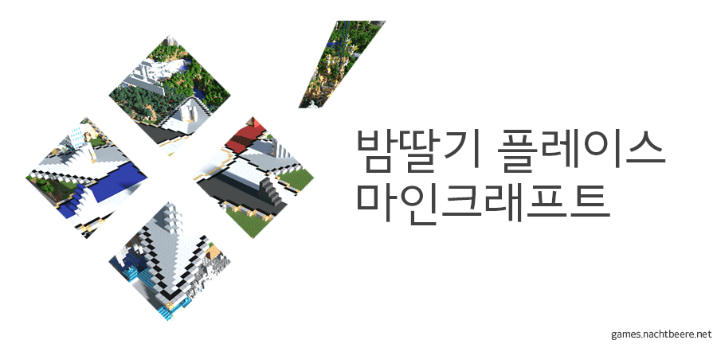
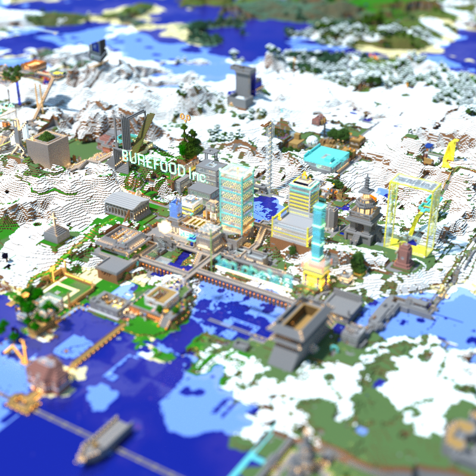
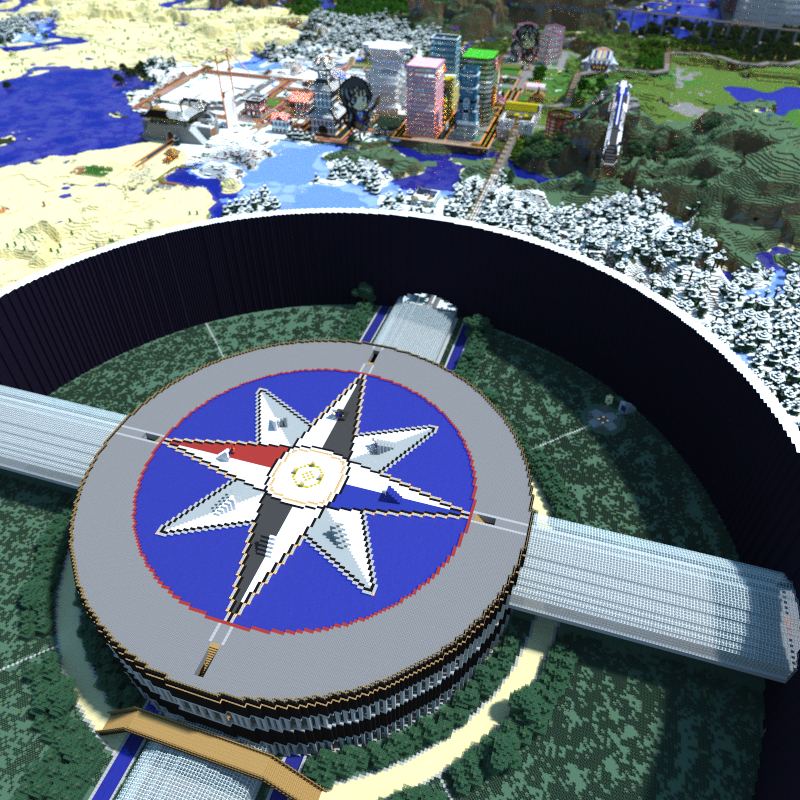
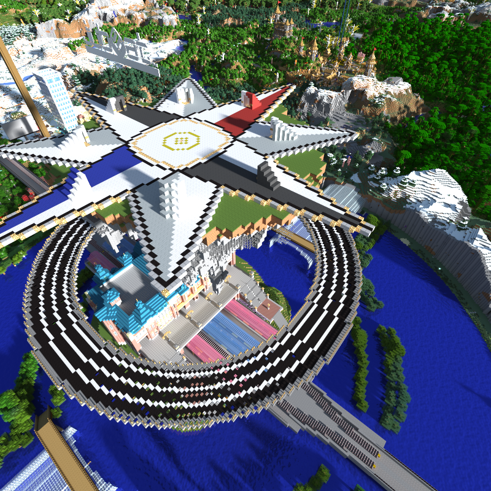

새로운 세계로 초대합니다

밤딸기는?
- 9년의 마인크래프트 호스팅 시간으로 전문화 된 24시간 서버 운영.
- 유저가 없어서 수준 낮은 유저도 없어.
- 다시 시작해도 노하우와 설계도가 남으니 괜찮아.
- 평생 즐기는 게임을 목표로 합니다.
- 마인크래프트 한국 미트업에서 Jeb이 직접 관람한 서버!
-
관리자가 마인크래프트 초기 한국어 번역에 참여함
- 이후 군대를 가서 번역자 망토를 못 받음
서버는?
-
밤딸기 플레이스 서버
- Candyapple Cloud VM
- "Candyapple Cloud" 는 밤딸기에서 운영하는 클라우드 서버입니다.
-
밤딸기 웹 서버
- Linode VPS
방침은?
- 퍼포먼스를 위해 매일 새벽 3시에 시스템이 자동으로 재시작 됩니다. 약 1분 뒤에 다시 접속할 수 있습니다.
- 24시간 운영이 원칙이나, 정기 시스템 점검 등의 사유로 일시 중단될 수 있습니다.
-
가급적 모든 맵 데이터 보존을 우선합니다.
- 맵 데이터는 램디스크 → 로컬 백업 → 내부망 백업 서버 → 상용 클라우드의 3단계 백업으로 안전하게 보관됩니다.
- 업데이트시 호환 문제 등으로 맵 데이터 보존이 불가능할 경우, 주요 건물을 WorldEdit의 설계도 파일로 후대를 위해 보존합니다.
- 보존되는 맵 데이터는 서버 실시간 지도에 표시되는 데이터가 대상입니다. 네더, 엔더 등은 보존 대상이 아니므로 초기화 될 가능성이 있습니다. 밤딸기는 네더, 엔더에 보관, 구축한 가상 재화에 대한 보상 책임을 지지 않습니다.
- 모든 유저는 밤딸기가 개인이 취미로 운영하는 서버임을 명심해야 합니다.
- 유저들에게 외부 홍보를 강요하지 않습니다. (입소문이면 충분합니다.)
주요 월드
구세계
구세계는 이 세상의 중심이 되는 곳입니다. 꽃이 피고, 나비가 날아다니고, 동물들이 뛰어다닙니다. 이 곳에서는 먹을 것을 구하고, 집을 짓고, 새로운 기술을 개발하여 몬스터와 싸워 살아 남아야 합니다. 만약 더 이상 이룰 것이 없다면, 남들에게 보여줄 만한 멋진 것을 만들어 보는 것도 좋겠죠.
광활한 대지는 몇 날 며칠을 걸어도 끝에 도달할 수가 없습니다. 이 곳에 처음 도착한 당신이 할 일은 어딘가로 떠나, 자신만의 세계를 만드는 것이죠. 만약 마음이 맞는 사람들이 있다면 더 큰 것을 향해도 좋습니다. 이 한가지를 잊지 마세요. 예의를 지키고, 함께 하는 사람이 많아야 즐겁게 지낼 수 있습니다.
신세계
신세계는 구세계의 무분별한 개발과, 자원 고갈을 막기 위해 다른 차원에 마련된 곳입니다. 이 곳에서는 규칙이 없다고 보아도 좋습니다. 모든 것을 부수어도 좋고, 모든 것을 약탈해도 상관이 없습니다. 이 곳은 한 달에 한 번 다시 만들어지게 되니, 늦기 전에 차원문으로 빠져나와 주세요.
Magrathea Planet Sandbox
이곳은 Magrathea에서 제공한 무제한 세계 편집기입니다. 물리 법칙을 무시하고 날아다닐 수 있고, 세계 편집기의 기능을 이용해 물체를 만들거나, 데이터를 입력하여 많은 블록들을 단숨에 만들거나 없애버릴 수 있습니다.
원하는 것이 있다면 무엇이든 만들어 보세요. 하지만 이곳에서 만든 모든 것들은 현실 세계로 가져가실 수 없습니다.
연옥
이곳은 매우 이상한 곳입니다. 눈을 뜨면 가진 것들이 모두 사라져 있고, 주위는 온통 두꺼운 검은 장벽 뿐입니다. 죽고 싶어도 죽을 수가 없고, 살고 싶어도 살 수가 없습니다. 벽을 넘어 옆 방으로 들어가기 위해서는 무수히 많은 구멍 중 단 하나인 입구를 찾아야 합니다.
이곳이 어떤 곳인지에 관해서는 의견이 분분합니다. 어떤 이들은 과거 현세의 사람들은 꿈의 세계에 마음대로 들어갈 수 있었던 것을 근거로, 이곳이 다시 돌아온 꿈의 세계라고 말합니다. 하지만 잠을 자도 들어가질 못 하는데 이게 어떻게 꿈의 세계냐고 반박하는 이들은 이곳이 죽은 자들이 헤메이는 연옥이라고 말합니다.
과연 이곳은 어디일까요? 진실을 알고 싶어도 기묘하고 아름다운 풍경에 정신이 빼앗겨 알 수가 없습니다.
시스템
게임에 사용되는 플러그인은 모두 밤딸기 자체 개발입니다. 게임 외 시스템에는 검증된 제3자의 플러그인이 사용됩니다.
- 실시간으로 30분에 한 번씩 지정된 장소의 단방향 포탈이 열립니다. 각 포탈의 위치는 지도에 표시되어 있습니다.
-
농작물은 야외에서 태양빛을 맞고, 기후가 맞아야 성장합니다.
- 바다를 간척해서 밀밭을 만들어도, 해풍이 불기 때문에 잘 자라지 않습니다.
- 서늘한 타이가 지역에서 코코아 농사를 지으려 해도, 기후가 맞지 않아 잘 자라지 않습니다.
-
문명화 된 블록에서는 조명이 어두워도 몬스터가 나타나지 않습니다.
- 문명화 된 블록이란, 자연에서 생성되지 않아 사람이 만들어낸 모든 블록을 말합니다.
- 주의: 조약돌을 구워 다시 돌로 만든 것은 문명화 된 블록으로 인식하지 않습니다.
지난 이야기
- 2010년 12월 26일 - 마인크래프트 라페도 서버 개설(공지)
- 2011년 4월 - 위키 사이트 자유인사전에 라페도 서버 정보를 정리 (자유인사전 | 마히커)
- 2011년 10월 12일 - 관리자 선출을 위한 제 1회 시험문제 출제 (문제 | 정답과 해설)
- 2011년 12월 15일 - 마인크래프트 버전 1.0.0으로 업데이트
- 2012년 1월 22일 - 웹 지도 HD화 및 추가 트윅
- 2012년 1월 31일 - 서버 사양 업데이트 및 정책 정돈. 임시 테스트 서버 구동 (공지)
- 2012년 2월 27일 - 2세대 월드 시작 및 버전 1.1.0으로 업데이트 (공지)
- 2012년 2월 27일 - 범용 마인크래프트 위키 사이트 '마인크래프트 세계를 여행하는 히치하이커를 위한 안내서' 개장
- 2012년 8월 5일 - 관광용으로 사용하던 1세대 맵 관리 실수로 인해 사용 불가
- 2013년 1월 2일 - 관리자 입대하다(사진)
- 2014년 5월 14일 - 모드 전향 및 밤딸기 서버로 명칭 변경
- 2014년 6월 25일 - 범용 마인크래프트 위키 사이트 '마인크래프트 세계를 여행하는 히치하이커를 위한 안내서' 재개장
- 2015년 1월 1일 - 관리자 전역하다
- 2015년 1월 11일 - 버전 1.6.4에서 1.7.10로의 업데이트시 크래시 발생으로 3세대 월드 시작
- 2015년 11월 27일 - 밤딸기 플레이스 웹 사이트 개장(공지)
- 2017년 1월 31일 - 회선 작업으로 인한 게임 서버 일시 중단(공지)
- 2018년 8월 6일 - 게임 서버 일시 중단이 영구적인 중단임을 선언(공지 | 중단을 암시하는 2016년의 공지)
- 2020년 4월 13일 - 후회 속에 게임 서버 영업 재개. 테스트 서버 우선 서비스
- 2020년 4월 30일 - 밤딸기 플레이스 웹 사이트 리뉴얼 개장
- 2020년 5월 모일 - 메인 서버 서비스 시작
과거의 발자취
이전 맵 데이터를 더이상 서비스하지 않는 대신, 싱글에서 구동 가능한 데이터를 배포합니다. (정식 1.7.10 이상으로 컨버팅 되었습니다.)
베타 1.1 ~ 정식 1.1 (1세대)

정식 1.1 ~ 1.5.2, 모드 1.6.4 (2세대)

모드 1.7.10 (3세대)

아직 다운로드를 제공하지 않습니다.
정식 1.15 (4세대)
현재 서비스중인 세대입니다.